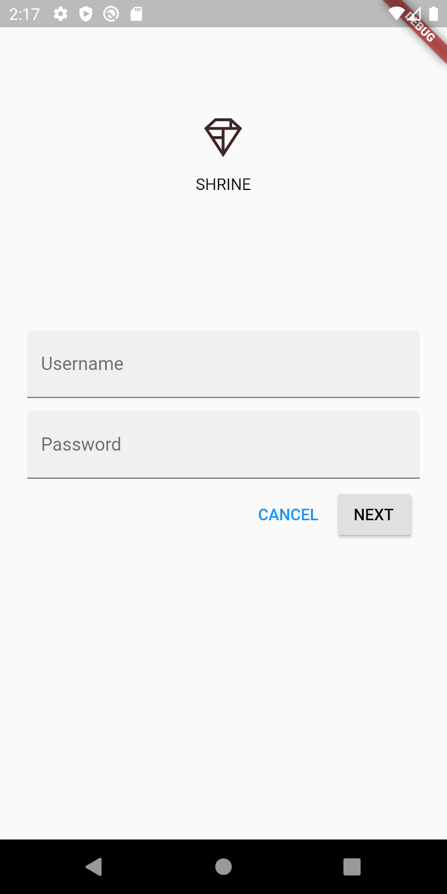
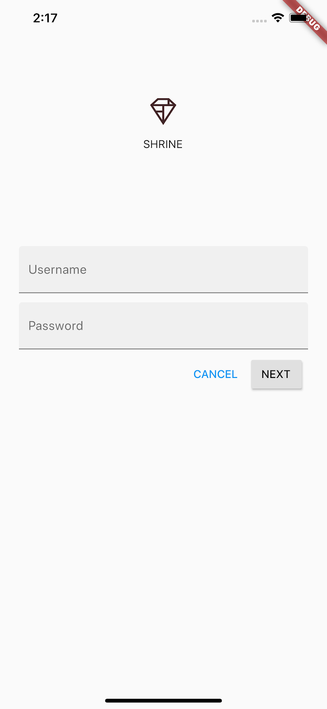
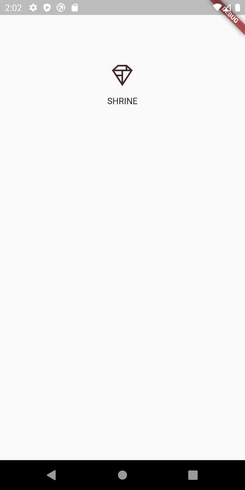
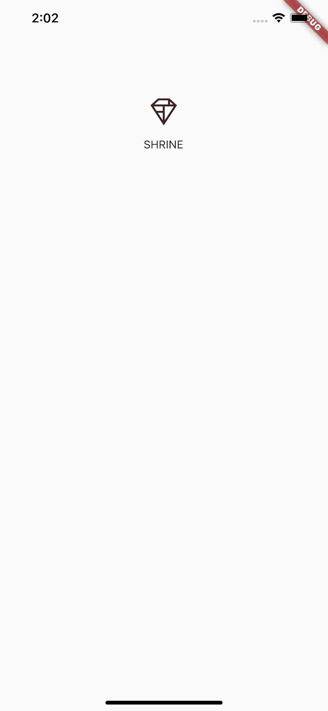
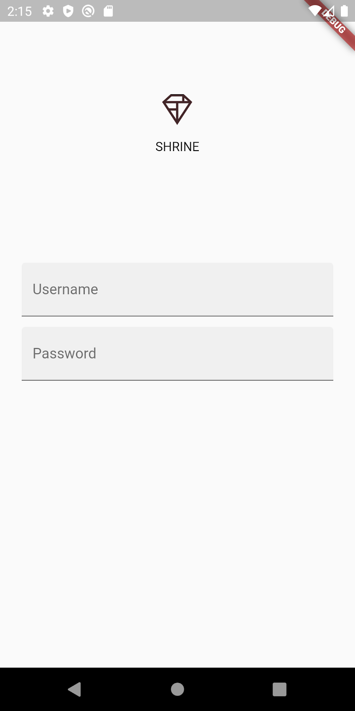
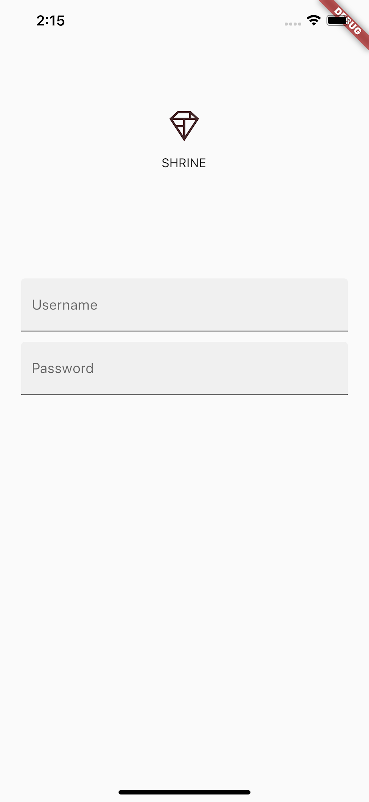
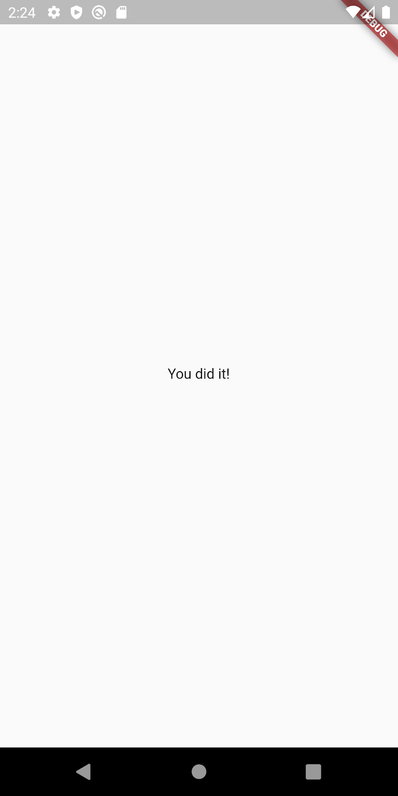
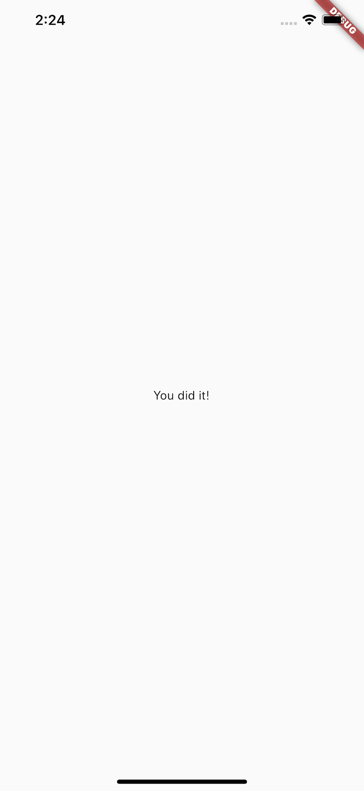

Flutter のマテリアル デザインとマテリアル コンポーネントとは何ですか?
マテリアル デザインは、大胆で美しいデジタル製品を構築するためのシステムです。 スタイル、ブランディング、インタラクション、モーションを一貫した一連の原則とコンポーネントの下で統合することにより、製品チームは設計の可能性を最大限に引き出すことができます。
Flutter 用マテリアル コンポーネント (MDC-Flutter) は、デザインとエンジニアリングを、アプリやプラットフォーム全体で一貫したユーザー エクスペリエンスを作成するコンポーネントのライブラリと結び付けます。 マテリアル デザイン システムが進化するにつれて、これらのコンポーネントは更新され、Google のフロントエンド開発基準に準拠して、一貫したピクセル パーフェクトな実装が保証されます。 MDC は、Android、iOS、および Web でも利用できます。
この Codelab では、MDC Flutter のいくつかのコンポーネントを使用してログイン ページを作成します。
構築するもの
この Codelab は、衣料品や家庭用品を販売する e コマース アプリ、Shrine というアプリの作成をガイドする 4 つの Codelab の最初のものです。 MDC-Flutter を使用して、任意のブランドやスタイルを反映するようにコンポーネントをカスタマイズする方法を示します。
この Codelab では、以下を含む Shrine のログイン ページを作成します。
- Shrineのロゴイメージ
- アプリ名（Shrine）
- 2 つのテキスト フィールド。1 つはユーザー名の入力用、もう 1 つはパスワードの入力用です。
- 2 つのボタン
Android | iOS |
 |  |
この Codelab の MDC-Flutter コンポーネントとサブシステム
- テキストフィールド
- ボタン
- インクの波紋 (タッチ イベントの視覚的なフィードバック)
このラボを完了するには、Flutter SDK とエディタの 2 つのソフトウェアが必要です。
次のいずれかのデバイスを使用して Codelab を実行できます。
- コンピューターに接続され、開発者モードに設定されている物理的な Android または iOS デバイス。
- iOS シミュレーター (Xcode ツールのインストールが必要)。
- Android Emulator (Android Studio でのセットアップが必要)。
- ブラウザー (デバッグには Chrome が必要です)。
- Windows、Linux、または macOS デスクトップ アプリケーションとして。 展開する予定のプラットフォームで開発する必要があります。 そのため、Windows デスクトップ アプリを開発する場合は、適切なビルド チェーンにアクセスするために Windows で開発する必要があります。 docs.flutter.dev/desktop で詳しく説明されているオペレーティング システム固有の要件があります。
Zip ダウンロード or Git Clone のどちらかの方法でダウンロードを行って下さい。
Zip ダウンロード
スターター プロジェクトは、material-components-flutter-codelabs-101-starter/mdc_100_series ディレクトリにあります。
GitHub からクローンする
GitHub からこの Codelab のクローンを作成するには、次のコマンドを実行します。
git clone https://github.com/material-components/material-components-flutter-codelabs.git cd material-components-flutter-codelabs/mdc_100_series git checkout 101-starter
プロジェクトを開いてアプリを実行する
- 選択したエディターでプロジェクトを開きます。
- Get Started: Test drive の「Run the app」の指示に従って、選択したエディターを使用します。
成功！ Shrine のログイン ページのスターター コードがデバイスで実行されている必要があります。 Shrine のロゴとそのすぐ下に「Shrine」という名前が表示されます。
Android | iOS |
 |  |
コードを見てみましょう。
Widgets in login.dart
login.dart を開きます。
次の内容が含まれている必要があります。
import 'package:flutter/material.dart';
class LoginPage extends StatefulWidget {
const LoginPage({Key? key}) : super(key: key);
@override
_LoginPageState createState() => _LoginPageState();
}
class _LoginPageState extends State<LoginPage> {
// TODO: Add text editing controllers (101)
@override
Widget build(BuildContext context) {
return Scaffold(
body: SafeArea(
child: ListView(
padding: const EdgeInsets.symmetric(horizontal: 24.0),
children: <Widget>[
const SizedBox(height: 80.0),
Column(
children: <Widget>[
Image.asset('assets/diamond.png'),
const SizedBox(height: 16.0),
const Text('SHRINE'),
],
),
const SizedBox(height: 120.0),
// TODO: Remove filled: true values (103)
// TODO: Add TextField widgets (101)
// TODO: Add button bar (101)
],
),
),
);
}
}
import ステートメントと 2 つの新しいクラスが含まれていることに注意してください。
- import ステートメントは、マテリアル コンポーネントをこのファイルに取り込みます。
- LoginPage クラスは、シミュレーターに表示されるページ全体を表します。
- _LoginPageState クラスの build() 関数は、UI 内のすべてのウィジェットの作成方法を制御します。
まず、ユーザーがユーザー名とパスワードを入力するログイン ページに 2 つのテキスト フィールドを追加します。
フローティング ラベルを表示し、タッチ リップルを有効にする TextField ウィジェットを使用します。
このページは主に、子をスクロール可能な列に配置する ListView で構成されています。
テキストフィールドを一番下に配置しましょう。
TextField ウィジェットを追加する
const SizedBox(height: 120.0) の後に 2 つの新しいテキスト フィールドとスペーサーを追加します。
// TODO: Add TextField widgets (101)
// [Name]
TextField(
decoration: const InputDecoration(
filled: true,
labelText: 'Username',
),
),
// spacer
const SizedBox(height: 12.0),
// [Password]
TextField(
decoration: const InputDecoration(
filled: true,
labelText: 'Password',
),
obscureText: true,
),
各テキスト フィールドには、InputDecoration ウィジェットを受け取る decoration: フィールドがあります。
filled: フィールドは、テキスト フィールドの背景が軽く塗りつぶされていることを意味し、ユーザーがテキスト フィールドのタップまたはタッチ ターゲット領域を認識できるようにします。
2 番目のテキスト フィールドの obscureText: true 値は、ユーザーが入力した入力を、パスワードに適した箇条書きに自動的に置き換えます。
ホット リロードを実行するプロジェクトを保存します (キーストローク: command + s)。
ユーザー名とパスワードの 2 つのテキスト フィールドを含むページが表示されます。
フローティング ラベルのアニメーションをご覧ください。
Android | iOS |
 |  |
次に、ログイン ページに「キャンセル」と「次へ」の 2 つのボタンを追加します。 TextButton と ElevatedButton の 2 種類の MDC ボタン ウィジェットを使用します。
オーバーフローバーを追加する
テキスト フィールドの後に、OverflowBar を ListView の子に追加します。
// TODO: Add button bar (101)
OverflowBar(
alignment: MainAxisAlignment.end,
// TODO: Add a beveled rectangular border to CANCEL (103)
children: <Widget>[
// TODO: Add buttons (101)
],
),
OverflowBar は、その子を一列に並べます。
ボタンを追加する
次に、OverflowBar の子のリストに 2 つのボタンを追加します。
// TODO: Add buttons (101)
TextButton(
child: const Text('CANCEL'),
onPressed: () {
// TODO: Clear the text fields (101)
},
),
// TODO: Add an elevation to NEXT (103)
// TODO: Add a beveled rectangular border to NEXT (103)
ElevatedButton(
child: const Text('NEXT'),
onPressed: () {
// TODO: Show the next page (101)
},
),
プロジェクトを保存します。 最後のテキスト フィールドの下に、次の 2 つのボタンが表示されます。
Android | iOS |
|
|


OverflowBar がレイアウト作業を処理します。 ボタンを水平に配置するため、ボタンが隣り合って表示されます。
ボタンに触れると、他に何も起こらずに、インクの波紋アニメーションが開始されます。 匿名の onPressed: 関数に機能を追加して、キャンセル ボタンでテキスト フィールドをクリアし、次のボタンで画面を閉じるようにします。
TextEditingController を追加する
テキスト フィールドの値をクリアできるようにするために、テキストを制御する TextEditingControllers を追加します。
_LoginPageState クラスの宣言のすぐ下に、コントローラーを final として追加します。
// TODO: Add text editing controllers (101) final _usernameController = TextEditingController(); final _passwordController = TextEditingController();
最初のテキスト フィールドの controller: フィールドで、_usernameController を設定します。
// TODO: Add TextField widgets (101) // [Name] TextField( controller: _usernameController,
2 番目のテキスト フィールドの controller: フィールドで、_passwordController を設定します。
// TODO: Add TextField widgets (101) // [Password] TextField( controller: _passwordController,
Edit onPressed
TextButton の onPressed: 関数で各コントローラーをクリアするコマンドを追加します。
// TODO: Clear the text fields (101)
_usernameController.clear();
_passwordController.clear();
プロジェクトを保存します。 テキスト フィールドに何かを入力してキャンセルを押すと、各フィールドが再びクリアされます。
このログイン フォームは良好な状態です。 ユーザーを Shrine アプリの残りの部分に進めましょう。
Pop
このビューを閉じるには、このページ (Flutter がルートを呼び出す) をナビゲーション スタックからポップ (または削除) します。
ElevatedButton の onPressed: 関数で、ナビゲーターから最新のルートをポップします。
// TODO: Show the next page (101)
Navigator.pop(context);
最後に、home.dart を開き、Scaffold で resizeToAvoidBottomInset を false に設定します。
return Scaffold(
// TODO: Add app bar (102)
// TODO: Add a grid view (102)
body: Center(
child: Text('You did it!'),
),
// TODO: Set resizeToAvoidBottomInset (101)
resizeToAvoidBottomInset: false,
);
これにより、キーボードの外観によってホームページまたはそのウィジェットのサイズが変更されないようになります。
それでおしまい！ プロジェクトを保存します。 先に進み、[次へ] をクリックします。
できたね！
Android | iOS |
 |  |
この画面は、MDC-102 で取り組む次の Codelab の開始点です。
テキスト フィールドとボタンを追加し、レイアウト コードを考慮する必要はほとんどありませんでした。 Flutter のマテリアル コンポーネントには多くのスタイルが用意されており、ほとんど問題なく画面に配置できます。
次のステップ
テキスト フィールドとボタンはマテリアル システムの 2 つのコア コンポーネントですが、他にもたくさんあります。 Flutter のマテリアル コンポーネント ライブラリで残りのウィジェットを調べることもできます。
または、MDC-102: マテリアル デザインの構造とレイアウトに進み、MDC-102 でカバーされている Flutter のコンポーネントについて学習してください。